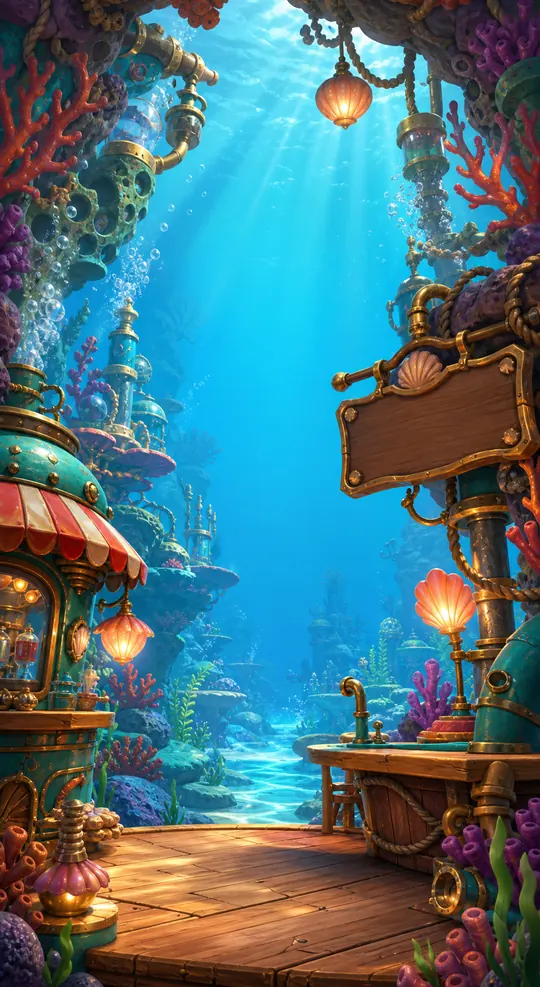
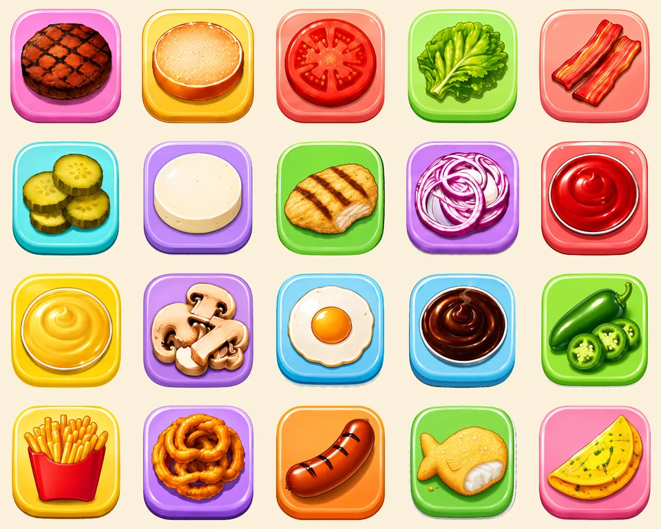

Չորս դարսելու ռեժիմ
Press Rush, Round 3D, Balance Tower 3D և Slice & Fit 3D յուրաքանչյուրը փոխում է լավ տեղադրման իմաստը: Ռեժիմի ընտրության էկրանը բացվում է յուրաքանչյուր անցումից առաջ:
Հպեք՝ դարսելու համար: Կառուցեք սենդվիչը:
Կառուցեք սենդվիչը մեկ շերտով: Ընտրեք լցոն, հպեք՝ տեղադրելու համար և պահեք կույտը կանգուն չորս ռեժիմում՝ Press Rush, Round 3D, Balance Tower 3D և Slice & Fit 3D:
Չորս դարսելու ռեժիմ, քսան բաղադրիչ, բաղադրատոմսերի պատվերներ, ձայնային էֆեկտներ և պահպանված միավորներ կան Unity նախագծում: Հանրային տարբերակ դեռ չկա:
 Press Rush
Պատվեր
Press Rush
Պատվեր
Ընտրեք լցոն բաղադրիչների վահանակից: Բաղադրատոմսերի գոտին ցույց է տալիս, թե ընթացիկ պատվերով որ սենդվիչն է պահանջվում:
Շերտը շարժվում է կույտի վերևում, և մեկ հպումով այն ամրանում է: Մոտ համընկնումը պահում է ամբողջ չափը, իսկ վրիպումը կտրում է շերտը:
Յուրաքանչյուր ռեժիմ սահմանում է իր կանոնը՝ չափս, ուղեծիր, հավասարակշռություն կամ կտրումների սահմանափակ քանակ: Վրիպումը, տապալված աշտարակը կամ կտրումների սպառումն ավարտում են անցումը:
Press Rush, Round 3D, Balance Tower 3D և Slice & Fit 3D յուրաքանչյուրը փոխում է լավ տեղադրման իմաստը: Ռեժիմի ընտրության էկրանը բացվում է յուրաքանչյուր անցումից առաջ:
Համընկնումը, քաշը և քամին սնում են կայունության չափիչը, որը ցույց է տալիս STABLE, WOBBLE կամ DANGER: Տապալված աշտարակը ավարտում է անցումը:
Սահեցրեք՝ շերտը սահմանափակ թվով կտրումներով կտրելու համար, ապա տեղավորեք թիրախային օղակի վրա:
Քսան բաղադրիչ գտնվում է ընտրիչի վահանակում, իսկ բաղադրատոմսերի գոտին ցույց է տալիս հետևելու հերթականությունը 166 բաղադրատոմսերի կատալոգից:
Երկու տասնշրջանակ նկարազարդ հաջորդականություն, օդում գտնվող քաղաք և ստորջրյա քաղաք, միաձուլվում են իրար՝ կույտի աճի հետ:
Լավագույն միավորներն ու շերտերի քանակը պահվում են յուրաքանչյուր ռեժիմի համար սարքում, և տարբերակում կան յոթ ձայնային էֆեկտ:
Թողարկման ամսաթիվ դեռ չկա: Սրանք նախագծի նպատակներն են, ոչ խոստումներ:
Արվեստի և ինտերֆեյսի ռեսուրսներ Unity նախագծից, ոչ խաղի նկարահանումներ:




Հպումով դարսելու արկադային խաղ: Սենդվիչները կառուցում եք շերտ առ շերտ չորս ռեժիմով՝ Press Rush, Round 3D, Balance Tower 3D և Slice & Fit 3D: Դարսելու գաղափարը կիսում է ստուդիայի Burger Stack; այստեղ շերտերը սենդվիչի բաղադրիչներ են, իսկ երեք ռեժիմ՝ 3D:
Սա նախատիպ է: Նախագիծը կազմված է Android և iOS-ի համար, բայց հանրային տարբերակ, խանութի էջ կամ թողարկման ամսաթիվ դեռ չկա:
Sandwich Stack-ը ստեղծվել է WillowinWorlds-ի կողմից՝ անկախ բջջային խաղերի ստուդիա (տե՛ս դրա հիմնական խաղեր). Հետևեք WillowinWorlds-ին այս էջում նշված սոցիալական ալիքներով կամ գրեք էլ. փոստով willowinworlds@gmail.com թարմացումներ խնդրելու համար՝ Sandwich Stack-ի մասին:
Քվեարկությունը կբացվի ստուդիայի ալիքներում: Հետևեք WillowinWorlds-ին՝ միանալու համար: